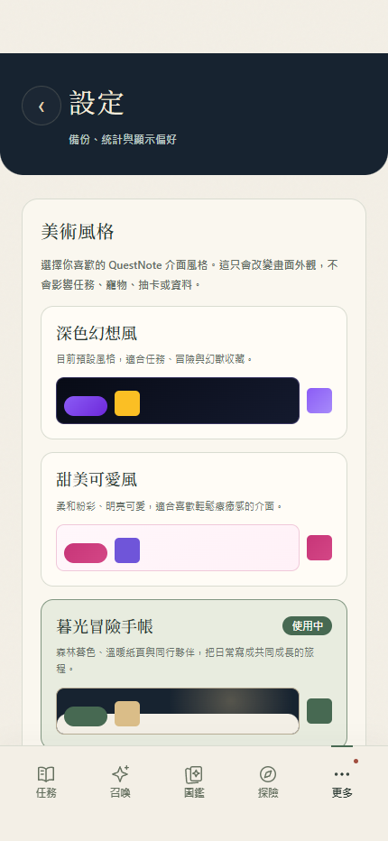
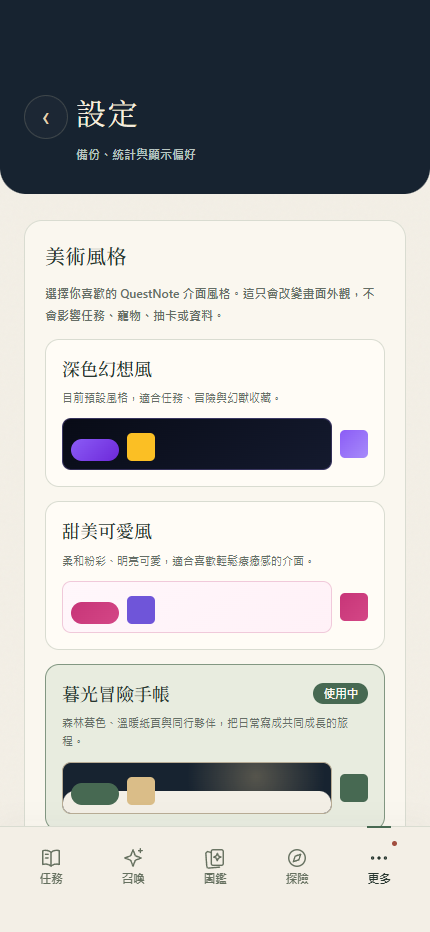

暮光風格 · 頂部與紙頁銜接
左：修正前，右：V3.4.26。使用相同測試資料配置與隔離存檔，430 × 932，模擬頂部 59px／底部 34px 安全區。圖片不含 iOS 原生狀態列；實機驗收仍待完成。
首頁 · 同行夥伴與今日任務
首頁 · 空任務
設定


左：修正前，右：V3.4.26。使用相同測試資料配置與隔離存檔，430 × 932，模擬頂部 59px／底部 34px 安全區。圖片不含 iOS 原生狀態列；實機驗收仍待完成。

